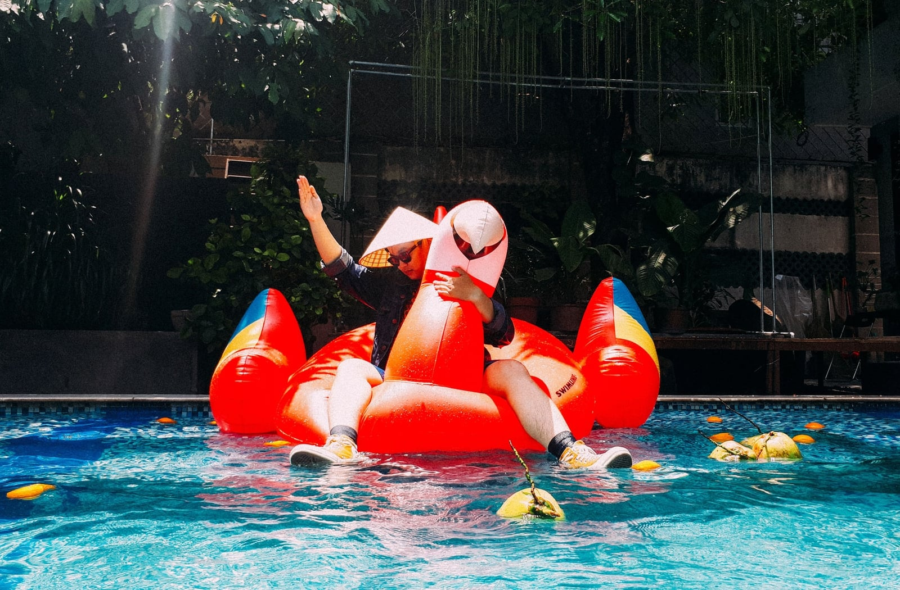

ILLUSTRATION
Japan House opens in mountainside to foster peak creativity.
Enim omittam qui id, ex quo atqui dictas complectitur. Nec ad timeam accusata, hinc justo falli id eum, ferri novum molestie eos cu.

Photography
Bowlcut launch a new summer collection that pays homage to “UK legends”

Photography
Thousands of previously unseen photographs by Andy Warhol will be made public this Autumn

Interactive Design
London-based Yinka Ilori’s storytelling furniture

Graphic Design
Anonymous Israeli art collective Broken Fingaz direct music video for U2 and Beck
Architecture
Suzanne Saroff’s meticulously arranged photographs alter perceptions
LATEST POSTS
Illustration
Japan House opens in mountainside to foster peak creativity.
Photography
Helmut Lang celebrates taxi drivers worldwide in latest campaign
Photography
Bowlcut launch a new summer collection that pays homage to “UK legends”
Photography
Thousands of previously unseen photographs by Andy Warhol will be made public this Autumn
Interactive Design
London-based Yinka Ilori’s storytelling furniture
Graphic Design
Anonymous Israeli art collective Broken Fingaz direct music video for U2 and Beck

Architecture
Suzanne Saroff’s meticulously arranged photographs alter perceptions

Graphic Design
Anu Ambasna’s playful illustrations celebrate club culture, brown bodies and perfect paunches

Graphic Design
A Brief History of the FIFA World Cup Logo

Graphic Design
Need a guide to LA’s graphic design scene? Shoplifters’ new issue has got your back

Photography/h6>
Fred Rowson directs film for Years and Years